Browser API
http-server
http-server is a simple, zero-configuration command-line http server
It is powerful enough for production usage, but it's simple and hackable enough to be used for testing, local development, and learning
We're going to install http-server locally
If you have Node.js installed execute the following command from your terminal
npm install http-server -gWe create an HTML file like always
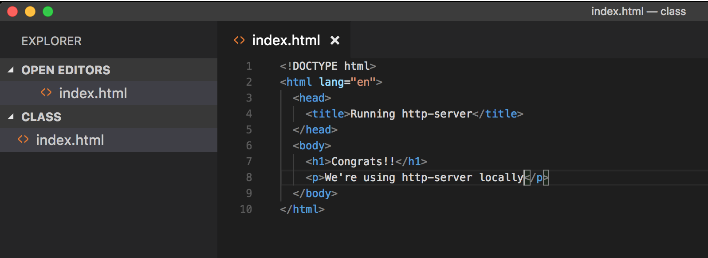
Usually you just double click the file
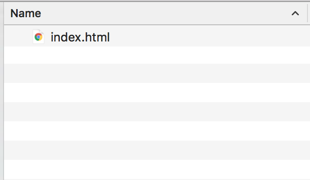
And open it on a browser
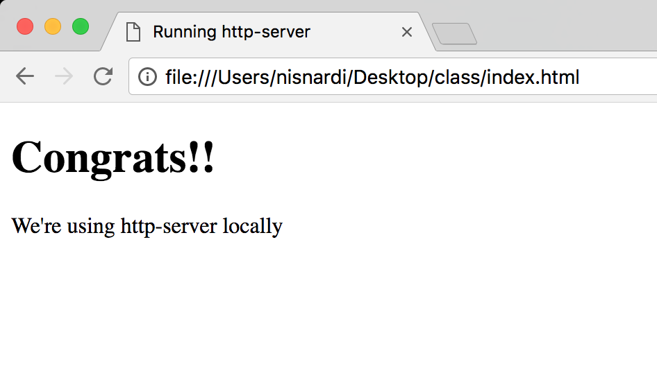
Now we are going to use the Visual Studio Code terminal
Go to the main bar and select View > Open View
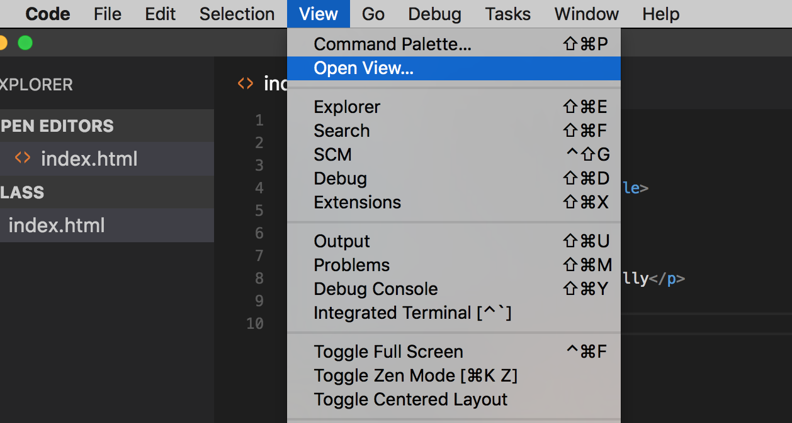
You will see a couple of options
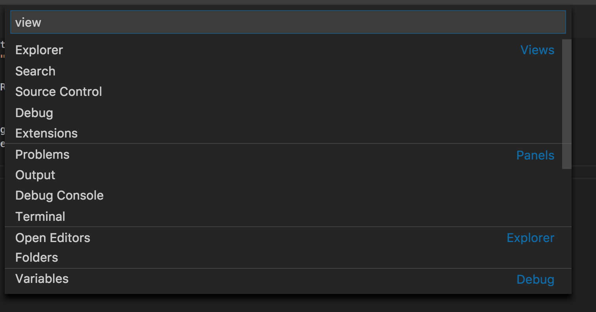
Select the Terminal
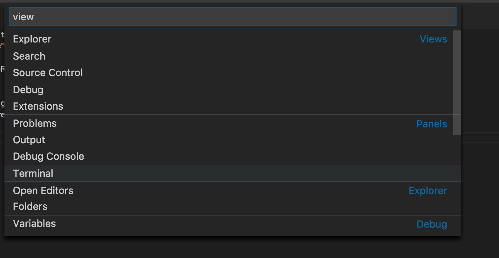
You will see the terminal view inside VSC
If you opened the folder VSC already knows that we're using this path
Type:
http-serverA new web server will start
This server will serve the folder files
So our site root is going to be our folder that we are using
If everything is ok you see a message
By default this server will run on port
8080The port might change if you already have that port listening with other app
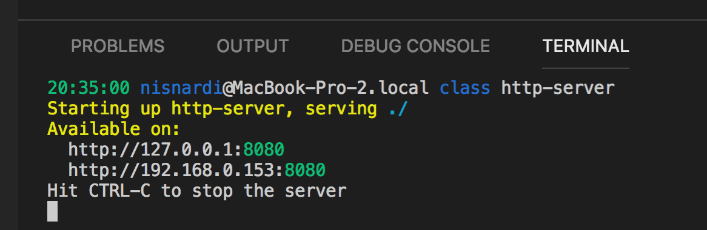
Now open the browser again
Navigate to
http://localhost:8080At this moment you must see your index.html document
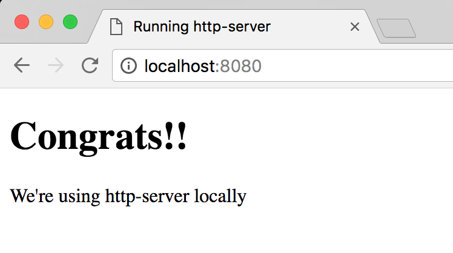
Using http-server we have a local server running and we are able to simulate a real site
From now on use http-server or similar to create your sites
If you need to stop the server just press
CTRL + CYou can open the terminal using the following shortcut
Ctrl+`
How to execute JavaScript
Using the browser we can execute JavaScript in the following ways:
- Console
- Inside script tag
- External file using script tag
Script Tag
The HTML script element is used to embed or reference executable code
Typically used to embed or refer to JavaScript code
The script element can also be used with other languages, such as WebGL's GLSL shader programming language
You can add the script tag inside the head element
Also, you can add your script tag right before closing the body element
The script tag and the way we load/execute our JavaScript can have some browser effects
For now just know that you can place it in both elements (head & body)
Example:
<head><script>// You can add your JavaScript code here!console.log("Welcome to the Browser again!!");</script></head>or
Example:
<body><h1>Hi</h1><p>Add the script tag</p><script>// You can add your JavaScript code here!console.log("Welcome to the Browser again!!");</script></body>
Practice
External file using script tag
- Using a script tag we can link our HTML file with a JavaScript one
- This is going to work in a similar way as the CSS files and the link tag
- Using the script tag
srcattribute we can set the external file value
Example:
HTML code:
<head><script src="script.js"></script></head>Code inside the
script.jsfile// archivo script.jsconsole.log("Welcome to the browser");When the browser finds a script tag will request the js file, download it and then execute it
While this happens the browser is blocked from being able to keep on rendering the document
This is one of the reasons why we use the script tag before the closing body one
By doing this we show the HTML content and then execute the script
Now the browsers supports
async&deferattributes that allows us to tell the browser how it has to handle our script filesExample:
<head><script src="script.js" async></script></head>or
Example:
<head><script src="script.js" defer></script></head>These attributes tell the browser it's safe to continue parsing while the scripts are being downloaded
Scripts with the
asyncattribute are executed asynchronouslyThis means the script is executed as soon as it's downloaded, without blocking the browser in the meantime
This implies that it's possible that a second script is downloaded & executed before the first script
Scripts with the
deferattribute are executed in order (i.e. first script, then second and so on)Also does not block the browser
Unlike async scripts, defer scripts are only executed after the entire document has been loaded
You can learn more about async and defer on the following links
Practice
User interaction
Browsers have a window object that represents a window containing a DOM document
This object has 3 methods that allows us to interact with the user:
alert, prompt & confirmThe browsers have already configured a reference so we can call this methods without the window object
All this methods block the browser flow until they are resolved
Example:
// Methods call using windows object:window.alert();window.prompt();window.confirm();// Using them as functions:alert();prompt();confirm();
Alert
The Window.alert() method displays an alert dialog with the optional specified content and an OK button
This method accepts a message parameter that will show to the user
Example:
window.alert("Hi I'm using the browser");alert("How cool is that!!");
Practice
Prompt
The Window.prompt() displays a dialog with an optional message prompting the user to input some text
This method accepts 2 parameter
First parameter is the message that we'll show the user
Second parameter is optional and is the input default value
This method returns a
stringvalueExample:
let name = window.prompt("Please input your name");let superHero = prompt("Please input your favourite superheroe name");
Practice
Confirm
The Window.confirm() method displays a modal dialog with an optional message and two buttons, OK and Cancel
This method accepts a string parameter that will show to the user
This method returns a
booleanvalueIf the user press Ok we get
truebackElse we get
falsebackExample:
let isAdult = window.confirm("Are you older than 17 years?");confirm("Are you older than 17 years?");
Practice
Location
The location interface
represents the location (URL) of the object it is linked toDocument and Window interface have a location
We can access it using
document.locationandwindow.locationExample:
// We can use it as a window or document propertywindow.location;document.location;// Just using locationlocation;Take a look at a URL structure
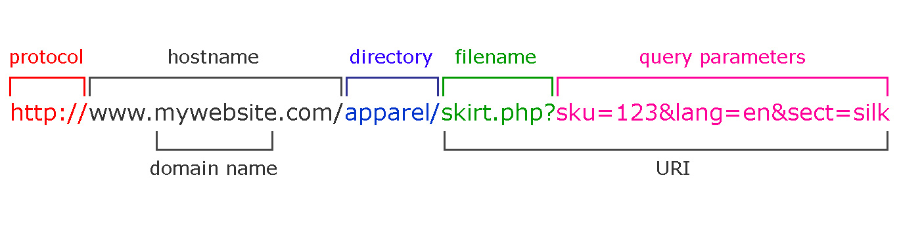
The location interface has properties that represent the different parts of a URL
- href
- protocol
- host
- hostname
- port
- pathname
- search
- hash
Example:
location.href;location.protocol;location.host;location.hostname;location.port;location.pathname;location.search;location.hash;You can try it too, go to a site page like facebook or a news site and log each property using console.log and see the result
For example consider the following URL:
https://leaderpost.com/sports/football/cfl/saskatchewan-roughriders/rider-rumblings-66-a-truly-classic-labour-day-game#go-ridersExample:
console.log(location.href); // https://leaderpost.com/sports/football/cfl/saskatchewan-roughriders/rider-rumblings-66-a-truly-classic-labour-day-game#go-ridersconsole.log(location.protocol); // https:console.log(location.host); // leaderpost.comconsole.log(location.hostname); // leaderpost.comconsole.log(location.port); // empty string as it doesn't have a port numberconsole.log(location.pathname); // /sports/football/cfl/saskatchewan-roughriders/rider-rumblings-66-a-truly-classic-labour-day-gameconsole.log(location.search); // empty string as we don't have a query string params (you can try this submiting a form using GET)console.log(location.hash); // #go-ridersHost and Hostname look the same as this url is using the default port number
Host retrieves the full host value (with port)
Hostname just retrieves the full host name
As you can see using location we can get all the URL components
Also, we can set a location value using the href property
As we change the document/window location the browser will navigate to the new location
Example:
location.href = "http://google.com";// orlocation = "http://google.com";
Practice
Timers
- In JavaScript we have
setTimeout&setIntervalfunctions that allow us to execute code based on time
setTimeout()
The setTimeout() method
sets a timer which executes a function or specified piece of code once after the timer expiresThis method accepts a function as first parameter that will be executed based on the delay that we configure
(callback)The second parameter is a number that represents the delay in milliseconds and by default is 0
Example:
const greet = function() {console.log("Hi!!");};setTimeout(greet, 5000);In this example we set a new timeout that will execute the greet function after 5000 milliseconds
So the greet function will get executed once after 5 seconds
We can use an anonymous function too
Example:
setTimeout(function() {console.log("Hi!!");}, 5000);In some cases we need to pass this timer more values
We can pass all the parameters that we want to the setTimeout function after we configure the callback and delay ones
Then in the setTimeout function we get the params in the same order that we send them
Example:
const greet = function(name, nickname) {console.log(`Hi ${name} ${nickname}`);};setTimeout(greet, 5000, "Marta", "Martita");In this example we configure the greet function as callback and a 5 second delay
Then we pass 2 other values as params (marta and martita)
This params will be params for the greet callback
So name will become Marta
And nickname will be Martita
Now we know how to pass params to a callback function that will be executed by setTimeout
clearTimeout()
The setTimeout returns a numeric value that represents the timeout ID
Using the clearTimeout and the timeout ID we can stop the function from being executed
The clearTimeout accepts a numeric parameter that represents the timeout ID
Example:
var idTimeOut = setTimeout(function() {console.log("Hi!!");}, 5000);// halt the timer execution before the delay happensclearTimeout(idTimeOut);In this example we configure the setTimeout function to execute the function that will greet in 5 seconds
We get an ID back that we store in the idTimeOut variable
Using clearTimeout and the timeout ID we stop the setTimeout from being executed (we turn off the timer)
Practice
setInterval() / clearInterval()
The setInterval() method
repeatedlycalls a function or executes a code snippet, with a fixed time delay between each callIt returns an interval ID which uniquely identifies the interval, so you can remove it later by calling clearInterval()
This methods accepts the function to be called as first parameter
The second parameter is a number that represents time in milliseconds (1 second -> 1000 milliseconds)
Example:
const greet = function() {console.log("hi");};const id = setInterval(greet, 1000);In this example the greet function is going to be called every 1 second
This interval is going to be executed until we stop it
Use the clearInterval function to stop the interval execution
Example:
const greet = function() {console.log("hi");};const id = setInterval(greet, 1000);clearInterval(id);We can also pass params to this function in the same we did with
setTimeoutExample:
const greet = function(name, nickname) {console.log(`hi ${name} ${nickname}`);};setInterval(saludar, 1000, "Marta", "Martita");
Practice
Working with elements
HTML element structure
This is a good time to remember the HTML element tag structure
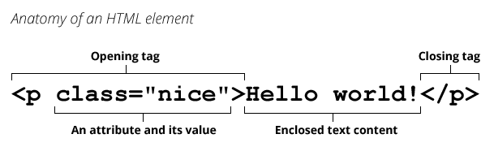
Element structure:
- Opening tag: We define the beginning of a new element
- name: we specify the element type, it can be p, a, div or any other valid element name
- attributes the attributes allows us to describe elements and add functionality to them. To set an attribute we use
attribute="atribute value".- Some common attributes are
id,class,href,srcand more
- Some common attributes are
- content: the element content is what we add between the opening and close tags. It can be text or other html elements as well
- Close tag: The browser needs to know where the element ends
- Opening tag: We define the beginning of a new element
Using JavaScript we will be able to create, insert, update and delete elements
Also, we can update elements attributes and attribute values using the
DOM
DOM
The document object model
DOMis a programming interface for HTML and XML documentsIt represents the page so that programs can change the document structure, style, and content
The DOM represents the document as nodes and objects, that way, programming languages can connect to the page
DOM has the following types:
- document: represents the main document
- element: represents a document element (it can be an HTML element)
- attribute: represents a node/element attributes
- nodeList: It's a node array and we can access the items using indexes
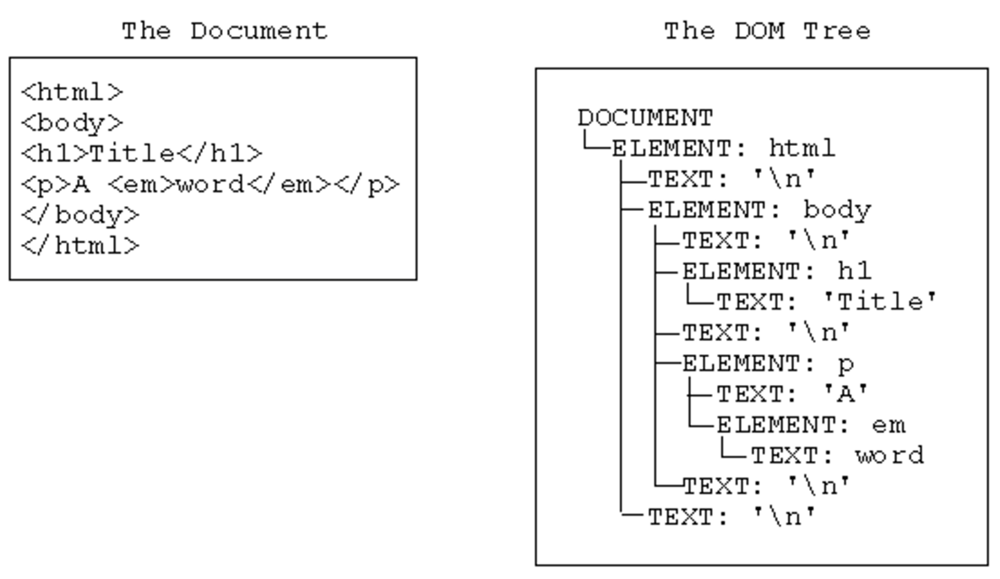
Document on load
The window object has a property called onload
The onload property is an
event handlerfor theload event of a Window, XMLHttpRequest, img element, etcThis event is fired when the resource has loaded
Subscribing to this event we can make sure that the document or elements are loaded before we reference them from our JavaScript code
example:
window.onload = function() {// This code gets executed after loading the documentconsole.log("Document loaded");};
Practice
- Now we know that the window object has a
onloadproperty that accepts a function as value that will be executed once the document is loaded - Every time we assign a function to an event property is called event handler, in this case we're handling the window load event
FROM NOW ON USE THE LOAD HANDLER ON YOUR BROWSER EXERCISES TO MAKE SURE IT'S LOADED
Selectors
- The selectors API provides methods that make it quick and easy to retrieve Element nodes from the DOM by matching against a set of selectors
- Selectors can return one or many elements depending the method that we use
- The most known selector is the document method getElementById
- This method accepts a string parameter with the id name value
- MDN getElementById doc
Example:
HTML
<div id="main">Hi I'm an HTML element</div>JS
const mainElement = document.getElementById("main");console.log(mainElement); // we can see the DOM representation of this elementIn this example we see how to use the method getElementById
The HTML has the attribute id with the value main
Using
document.getElementById('main')we get the element passing main as the id valueAs this object exists on the DOM we retrieve the element back
In this case we
assigntheelement referenceto themainElement variablequerySelector & querySelectorAll allow us to select elements using CSS selector
Both of this selector accepts a string as parameter
This parameter represent a CSS selector
The document method querySelector returns the first Element within the document that matches the specified selector, or group of selectors
In case it doesn't matches are found, null is returned
The method querySelectorAll returns a static (not live)
NodeListrepresenting a list of the document's elements that match the specified group of selectorsSo we need to remember that querySelector returns one element and querySelectorAll a collection
querySelector
Example:
HTML
<div>Hi I'm div number 1</div><div>Hi I'm div number 2</div><span>Hi I'm span number 1</span><span>Hi I'm span number 2</span>JS
const div = document.querySelector("div");const span = document.querySelector("span");console.log(div); // <div>Hi I'm div number 1</div>console.log(span); // <span>Hi I'm span number 1</span>In this example we use querySelector to get one element using the CSS element name selector (div & span)
The same way we can select elements using other CSS selectors
Example:
HTML
<div class="red">Hi I'm div number 1</div><div>Hi I'm div number 2</div><span>Hi I'm span number 1</span><span class="red">Hi I'm span number 2</span>JS
const div = document.querySelector("div.red");const span = document.querySelector("span.red");console.log(div); // <div class="red">Hi I'm div number 1</div>console.log(span); // <span class="red">Hi I'm span number 2</span>querySelectorAll Example:
HTML
<div>Hi I'm div number 1</div><div>Hi I'm div number 2</div><span>Hi I'm span number 1</span><span>Hi I'm span number 2</span>JS
const divs = document.querySelectorAll("div");const spans = document.querySelectorAll("span");console.log(divs); // NodeList(2) [div, div]console.log(spans); // NodeList(2) [span, span]In this example use querySelectorAll to get all div elements and the all span ones
This method returns a NodeList with 2 elements in each case as we have 2 of each elements type
Also, we can use other CSS selectors
querySelectorAll Example:
HTML
<div class="red">Hi I'm div number 1</div><div>Hi I'm div number 2</div><span>Hi I'm span number 1</span><span class="red">Hi I'm span number 2</span>JS
const redElements = document.querySelectorAll(".red");console.log(redElements); // NodeList(2) [div.red, span.red]In this case we use the class selector (.red) to get all elements that have the class="red" attribute
Using this method we get a node collection back with 2 elements but in this case we have a div and span as both of them have the class="red" attribute and value
In this examples we can see that we have different selector methods to select elements with different criteria
Practice
Element Attributes
- Element.attributes property returns a live collection of all attribute nodes registered to the specified node
- attributes is a key/value pair of strings that represents any information regarding that attribute
- Use the name property to get the attribute name
- Use the value property to get the attribute value
- MDN attributes doc
Example:
HTML
<p id="main" class="red">Text in red</p>JS
const element = document.querySelector("p");console.log(element.attributes); // NamedNodeMap {0: id, 1: class, id: id, class: class, length: 2}console.log(element.attributes[0].name); // idconsole.log(element.attributes[0].value); // mainconsole.log(element.attributes[1].name); // classconsole.log(element.attributes[1].value); // redAn easier way to get an element attribute value is using
getAttributeThis method accepts a string parameter with the element attribute name
It will return the attribute value or null if it doesn't have the attribute
Example:
HTML
<p id="main" class="red">Text in red</p>JS
const element = document.querySelector("p");const id = element.getAttribute("id");const classValue = element.getAttribute("class");console.log(id); // mainconsole.log(classValue); // redAlso, we can use the attribute name as element property to access the attribute value
Example:
HTML
<p id="main" class="red">Text in red</p>JS
const element = document.querySelector("p");const id = element.id; // id is an element property as the html element has the attributeconsole.log(id); // mainIn the previous example we don't access the class attribute as is a especial property
As
classis a JavaScript reserved word we can't use itThis is why we have the element property
classNameinstead of classSo the html attribute is going to be
classand the JavaScript property isclassName
Example:
HTML
<p id="main" class="red">Text in red</p>JS
const element = document.querySelector("p");const className = element.className;console.log(className); // redconsole.log(element.getAttribute("class")); // red
Practice
Class List
- The classList is a read-only property which returns a live DOMTokenList collection of the class attributes of the element
- Using
classListis a convenient alternative to accessing an element's list of classes as a space-delimited string viaelement.className
Example:
HTML
<p id="main" class="red bold">Bold text in red</p>JS
const element = document.querySelector("p");console.log(element.classList); // DOMTokenList(2) ["red", "bold", value: "red bold"]console.log(element.classList[0]); // redconsole.log(element.classList[1]); // boldclassList has the following methods so we can interact with it
- add: add specified class values. If these classes already exist in attribute of the element, then they are ignored
- remove: remove specified class values
- item: return class value by index in collection
- toggle: if class exists then remove it and return false, if not, then add it and return true
- contains: checks if specified class value exists in class attribute of the element
- replace: replaces an existing class with a new class
Example:
HTML
<p id="main" class="red bold">Bold text in red</p>JS
const element = document.querySelector("p");element.classList.add("hide"); // we add the hide class to the p elementelement.classList.toggle("hide"); // as the element has the hide class it will remove it, otherwise it will add itelement.classList.remove("bold"); // we remove the bold classelement.classList.item(0); // using 0 based index we can get any class using the class index positionelement.classList.contains("red"); // in this case it will return true as the element has the red classelement.classList.replace("red", "green"); // we change red for green classclassList is great to interact with an element's classes
Practice
Has Attributes?
- We can test if an element has an attribute with the
hasAttributemethod - This method accepts a string parameter with the attribute name
- It returns a boolean value
Example:
HTML
<p id="main" class="red">Text in red</p>JS
const element = document.querySelector("p");console.log(element.hasAttribute("class")); // trueIn this example we test if the element has the class attribute
We get a true value as the element has the class attribute
Practice
Has Attributes?
- The hasAttributes method returns a Boolean value, indicating if the current element has any attributes or not
Example:
HTML
<p id="main" class="red">Element with attributes</p><h2>Element without attributes</h2>JS
const element = document.querySelector('p');const title = document.querySelector('h2');console.log(element.hasAttributes():); // trueconsole.log(title.hasAttributes():); // false
Set Attribute
- The setAttribute method sets the value of an attribute on the specified element
- If the attribute already exists, the value is updated; otherwise a new attribute is added with the specified name and value
- This method accepts 2 parameters, the first one is a string with the attribute name, the second one is the value that we want to set to the attribute,
setAttribute(attributeName, attributeValue)
Example:
HTML
<h2>Element without attributes</h2>JS
const title = document.querySelector("h2");console.log(title.hasAttributes()); // falsetitle.setAttribute("id", "main");console.log(title.hasAttributes()); // trueconsole.log(title.getAttribute("id")); // mainIn this example we have an h2 element without attributes
Then we set an id attribute with the main value (id="main") using
setAttributemethodUsing
hasAttributeswe know that this element has at least one attributeThen we get the id attribute value using
getAttribute
Remove Attribute
- The removeAttribute method removes an attribute from the specified element
- This method accepts a string parameter that names the attribute to be removed from element
Example:
HTML
<h2 id="main">Element with id attribute</h2>JS
const title = document.querySelector("h2");console.log(title.hasAttributes()); // truetitle.removeAttribute("id");console.log(title.hasAttributes()); // falseIn this example we get an element that has the id attribute and remove it using
removeAttribute('id')
Practice
Elements relationship
- The parentElement read-only property returns the DOM node's parent Element, or null if the node either has no parent, or its parent isn't a DOM Element
- An element that contains other elements is considered a parent element
Example:
HTML
<div><p>Child element</p></div>JS
const parragraph = document.querySelector("p");const parent = parragraph.parentElement;console.log(parent); // <div></div>Also, we can retrieve the element's child elements using the
childrenpropertyAn element that inside other element is consider a child element
This method returns an HTMLCollection
Example:
HTML
<div><p>Child Element</p><p>Child Element</p><p>Child Element</p><p>Child Element</p></div>JS
const div = document.querySelector("div");const children = div.children;console.log(children); // HTMLCollection(4) [p, p, p, p]As we get a collection back we can use indexes to access the children in different positions
Example:
HTML
<div><p>Child Element</p><p>Child Element</p><p>Child Element</p><p>Child Element</p></div>JS
const div = document.querySelector("div");const children = div.children;const firstChildElement = children[0];console.log(firstChildElement); // <p>Child Element</p>console.log(children.item(0));In this example we use index 0 to get the first element
Also, HTMLCollection has an
itemmethod that retrieves an element in a specific positionWe can see 2 different ways of accomplish the same objective (retrieve a child element)
Also we could do the same using CSS selectors and querySelector method
Practice
- Elements can have sibling
- These elements are at the same element level
Example:
HTML
<p>Paragraph element</p><p>Paragraph element</p><p>Paragraph element</p>In this example we can see that all 3 elements are at the same level so they are siblings
We can access the previous element using previousElementSibling property
Also we can get the next element using nextElementSibling property
Example:
HTML
<p>Paragraph element 1</p><p>Paragraph element 2</p><p>Paragraph element 3</p>JS
const paragraphs = document.querySelectorAll("p");const middleElement = paragraphs[1];console.log(middleElement.previousElementSibling); // <p>Paragraph element 1</p>console.log(middleElement.nextElementSibling); // <p>Paragraph element 3</p>
Practice
Change element content
- innerText is a property that represents the "rendered" text content of a node and its descendants
- As a getter, it approximates the text the user would get if they highlighted the contents of the element with the cursor and then copied to the clipboard
- This feature was originally introduced by
Internet Explorer, and was formally specified in the HTML standard in 2016 after being adopted by all major browser vendors
Example:
HTML
<p>This is a great text to get using JavaScript</p>JS
const paragraph = document.querySelector("p");console.log(paragraph.innerText); // This is a great text to get using JavaScriptparagraph.innerText = "JavaScript in browsers is amazing";console.log(paragraph.innerText); // JavaScript in browsers is amazingIn this example we get the content text from the paragraph using
paragraph.innerTextAlso, use the property to set a new value
paragraph.innerText = 'JavaScript in browsers is amazing';The textContent property represents the text content of a node and its descendants
Example:
HTML
<p>This is a great text to get using JavaScript</p>JS
const paragraph = document.querySelector("p");console.log(paragraph.textContent); // This is a great text to get using JavaScriptparagraph.textContent = "JavaScript in browsers is amazing";console.log(paragraph.textContent); // JavaScript in browsers is amazingBoth
innerText&textContentallows us to get and set an element contentThey have some differences between them in some special cases and you can read about them on the MDN textContent doc
Practice
- The innerHTML property gets or sets the HTML or XML markup contained within the element
- This property accepts a DOMString containing the HTML serialization of the element's descendants
- Setting the value of innerHTML removes all of the element's descendants and replaces them with nodes constructed by parsing the HTML given in the string htmlString
Example:
HTML
<p>This is just a paragraph text</p>JS
const paragraph = document.querySelector("p");console.log(paragraph.innerHTML); // This is just a paragraph textparagraph.innerHTML = "<span>Ohhhhhhhhhhhhhhhh what are we doing??</span>";console.log(paragraph.innerHTML); // <span>Ohhhhhhhhhhhhhhhh what are we doing??</span>Using innerHTML we can retrieve the element content whether it's text or other HTML content
We can set the innerHTML property using a string
If the string has valid HTML content, the browser will parse it and create the proper elements
It's an easy way of creating new elements
Example:
JS
const paragraph = document.querySelector("p");paragraph.innerHTML = "";This is an easy way to remove all the element content
As this property might have some security issues we can use it on some cases
Practice
Using CSS properties
- The style property is used to get as well as set the inline style of an element
- While getting, it returns a CSSStyleDeclaration object that contains a list of all styles properties for that element with values assigned for the attributes that are defined in the element's inline style attribute
- The style property has the same (and highest) priority in the CSS cascade as an inline style declaration set via the style attribute
- As we get an object back we can set or get css properties
- The CSS properties name will be in camelCase
cssPropertyName - For example:
background-colorbecomes:backgroundColor
Example:
HTML
<p>This element doesn't have any styles</p>JS
let element = document.querySelector("p");element.style; // we get an empty object ({}) backelement.style.color = "red"; // As style is an object we can set properties, in this case we set the color to redelement.style.fontWeight = "bold"; // using font-weight we can set the font to bold, as it's JavaScript the property name is fontWeightUsing the style property and CSS property names written in JavaScript form we can style our components using JS
Practice
Element CRUD
- CRUD means:
- Create
- Read
- Update
- Delete
- This means that we can create, update & delete elements
- The read action we can say it's when we select an element and get properties from it
Creating elements
- The document object has a createElement method that allows us to create new elements
createElementaccepts a string as parameter with the HTML element name (a, div, span, li, ul, etc)
Example:
In this example we call the createElement method and pass 'p' as parameter (tagName)
Then we assign the element reference to the paragraph variable
This element it's in memory and it doesn't have any content
So now we can use the paragraph variable to manipulate the new paragraph element like adding content, adding properties or even insert it into other elements
Insert an element
- The appendChild method adds a node to the end of the list of children of a specified parent node
- This method will insert the new element as last child
Example:
JS
const paragraph = document.createElement("p");const div = document.createElement("div");paragraph.innerText = "Adding some text as content";div.appendChild(paragraph);document.body.appendChild(div);In this example we define 2 variables (paragraph & div) and assign one new element to each one (p & div)
Then we change the paragraph content and assign the text: Adding some text as content
Now that the paragraph has some content we append it to the div element
At the end we append the div into the document body
At the end our DOM looks like this:
<div><p>Adding some text as content</p></div>For example we can add some attributes and styles!
Example:
JS
const paragraph = document.createElement("p");const div = document.createElement("div");paragraph.innerText = "Adding some text as content";paragraph.setAttribute("id", "my-paragraph");paragraph.style.fontWeight = "bold";paragraph.style.color = "green";div.border = "1px solid gray";div.appendChild(paragraph);document.body.appendChild(div);
Practice
Remove elements
- The removeChild method removes a child node from the DOM
- This method returns the removed node
- Select the element before removing it
Example:
HTML
<div><p>First paragraph</p><p>Second paragraph</p><p>Third paragraph</p></div>JS
var div = document.querySelector("div");var firstParagraph = div.children.item(0);div.removeChild(firstParagraph);In this example we select the div element
Then we get the first children
Once we have the child reference we remove it from the div using
div.removeChild(firstParagraph)In case we would like to delete all children at once we can set the innerHTML value to ''
Example:
HTML
<div><p>First paragraph</p><p>Second paragraph</p><p>Third paragraph</p></div>JS
var div = document.querySelector("div");div.innerHTML = "";
Practice
Events
- DOM Events are sent to notify code of interesting things that have taken place
- Each event is represented by an object which is based on the Event interface, and may have additional custom fields and/or functions used to get additional information about what happened
- Events can represent everything from basic user interactions to automated notifications of things happening in the rendering model
- The browser will trigger events whenever something happens with the document or browser itself
- For example we can know when the document is loaded, a button is clicked or a key is pressed
- Events has the following structure:
- type
- target
- event handler
- event object
- This are the 2 most common ways to handle events
- Assign a function to the element event property
on and name of the eventfor example: element.onclick - Using addEventListener
- Assign a function to the element event property
Example:
HTML
<button>Click Me!!!</button>JS
const button = document.querySelector("button");button.onclick = function() {// Code that will be executed once button gets clickedconsole.log("Oh, I been clicked");};Also we could do something like:
Example:
JS
const button = document.querySelector("button");const handleClickEvent = function() {console.log("Oh, I been clicked");};button.onclick = handleClickEvent;
Practice
Add Event Listener
- We can also add event handlers using addEventListener
- This method can be used in any object like window, document and other html elements
- addEventListener accepts 2 parameters
- event type: it's a string with the event name ('click')
- event handler: it's a function that will work as callback
Example:
HTML
<button>Click Me!!!</button>JS
const button = document.querySelector("button");button.addEventListener("click", function() {// code that will be executed once the button is clickedconsole.log("Oh, I been clicked");});In the event listener function we can use the reserved word this to reference the element that emited the event
In the previous example
thiswill reference the buttonExample:
function clickHandler() {console.log(this); // this is the button that we clickedthis.style.backgroundColor = "green";}function dblclickHandler() {this.style.backgroundColor = "red";}const button = document.querySelector("button");button.addEventListener("click", clickHandler);button.addEventListener("dblclick", dblclickHandler);In this example we can see how to add a double click event listener using the
dblclicknameYou can check more events on the MDN addEventListener doc
Practice
Remove Event Listener
To remove an event listener we use the removeEventListener method
This method can also be used on window, document, and HTML elements
Also, this method accepts two parameters:
- event type: it's a string with the event name ('click')
- event handler: it's a function that will work as callback
Example:
function clickHandler() {console.log(this);}let button = document.querySelector("button");button.addEventListener("click", clickHandler); // We add the click event listenerbutton.removeEventListener("click", clickHandler); // We remove the same event listener that we previously addedRemember to always remove the event listener before removing your DOM elements
Otherwise you might have unexpected results and memory issues (if many elements)
Practice
As we learn events have different properties that we can use and some of them are:
- Event.target: A reference to the target to which the event was originally dispatched
- Event.type: The name of the event (case-insensitive)
- Event.preventDefault() Prevents default element behaviour
Using the event object we can know more about it and also prevent the event default action
For example links element have the default click event behaviour set to navigate to the href url
We can prevent this from happening using the
preventDefaultmethod
Example:
HTML
<a href="contact.html">Go to contact page</a>JS
let link = document.querySelector("a");link.addEventListener("click", function(event) {event.preventDefault(); // by calling preventDefault the event is not going to trigger the default behaivourconsole.log("look someone clicked me");});Using JavaScript we can handle mouse events like
click, dblclick, mouseover, mouseout & mousemoveThe event object has properties that help us know the mouse position like
clientX & clientYExample:
let body = document.querySelector("body");body.addEventListener("click", function(event) {console.log(event.clientX);console.log(event.clientY);});
Practice
With JavaScript we can handle keyboard events too like
keypress, keydown y keyupThe event object that we get as parameter has a
charCodeproperty with a numeric value that represents the pressed keyStrings has a static method called fromCharCode (
String.fromCharCode) that will accept a number value as parameter and returns the key valueCombining
charCodeandString.fromCharCodewe can know the key that the user pressedExample:
const body = document.querySelector("body");body.addEventListener("keypress", function(event) {const keyCode = event.charCode;const key = String.fromCharCode(keyCode);console.log(key);});
Practice
List of Events you can use:
- The browser API allow us to use many events handlers to create interactive UI's:
- onchange
- onclick / ondblclick / onmousedown / onmousedown
- onmouseover / onmouseout
- onkeydown / onkeypress / onkeyup
- onload
- onresize
- onscroll
- oninput
- onfocus / onblur
Practice
Extra practice
Forms
HTML Forms helps us retrieve user data
Using JavaScript we can handle inputs and forms events and values
Also, we can check the values that the user inputs
We need to select the form to be able to interact with
Example:
const form = document.querySelector("form");The
documentobject has aformsproperty that returns all the document form elementsExample:
const firstForm = document.forms[0];const documentForms = document.forms;The
formelement have aelementsproperty that returns the selected form elements collectionExample:
const form = document.querySelector("form");const formElements = form.elements;console.log(formElements);// As it's a collection we can get the first element using 0 as indexconst firstElement = form.elements[0];The form object has the following properties:
action,target,encoding&methodAs we know this are all HTML form attributes
Using JavaScript we can get or set this properties values
This is a good time to go check the HTML form section!
Example:
HTML
<formaction="save_user.html"method="get"enctype="application/x-www-form-urlencoded"name="login"></form>JS
const form = document.querySelector("form");console.log(form.action); // save_user.htmlconsole.log(form.method); // getconsole.log(form.encoding); // application/x-www-form-urlencodedconsole.log(form.name); // login
Practice
- The form elements have a
valueproperty that returns the element value - We can use this property on many form elements like:
- inputs of text, password, hidden
- checkbox
- radio
- textarea
Example:
HTML
<formaction="save_user.html"method="get"enctype="application/x-www-form-urlencoded"name="login"><input type="text" id="username" name="username" /><input type="password" id="pass" name="pass" /><input type="submit" name="submit" value="Send" /></form>JS
const form = document.querySelector("form");const username = form.elements[0].value;username.value; // we get an empty string as it doesn't have a valueusername.value = "Pepe"; // We can also set an input value
Practice
- Forms emit a submit event
- We can handle the form submit event using event handlers
- When the form gets submitted it will send the input values to the action document
- We can prevent the default form behaviour using the event preventDefault method
- Other way to do this with forms is returning a false value
Example:
HTML
<formaction="save_user.html"method="get"enctype="application/x-www-form-urlencoded"name="login"><input type="text" id="username" name="username" /><input type="password" id="pass" name="pass" /><input type="submit" name="submit" value="Send" /></form>JS
const form = document.querySelector("form");form.onsubmit = function() {// This code will get executed when the form is submited// Returning false we don't execute the form submitionreturn false;};// alsoconst form = document.querySelector("form");form.onsubmit = function(event) {event.preventDefault();};// orform.addEventListener("submit", function(event) {event.preventDefault();});
Practice
- Select elements have a
selectedIndexproperty that returns a number value for the selected option index - Also, this element has a
optionsproperty that returns the options elements collection - We can get the selected option if we combine the select
selectedIndexproperty and theoptionscollection - Option elements also have a
valueproperty
Example:
HTML
<formaction="save_user.html"method="get"enctype="application/x-www-form-urlencoded"name="login"><select name="countries" id="countries"><option value="ar">Argentina</option><option value="br">Brazil</option><option value="ca">Canada</option><option value="cl">Chile</option></select></form>JS
const select = document.querySelector("select");const index = select.selectedIndex;console.log(index); // returns the option indexconsole.log(select.options); // returns the option collectionSelect.options[index]; //console.log(select.options[index].value); // returns the selected option value
Practice
checkboxelements also have avalueproperty- Also, they have a
checkedproperty that returns a boolean value in case the checkbox is checked or not (true or false) - Set the
checkedto true if you want to check it and false to uncheck it
Example:
HTML
<formaction="save_user.html"method="get"enctype="application/x-www-form-urlencoded"name="login"><input type="checkbox" name="sex" value="f" checked /> Female<input type="checkbox" name="sex" value="m" /> Male</form>JS
const checkboxes = document.querySelector("checkbox");const female = checkboxes[0];const male = checkboxes[1];console.log(female.checked); // returns true as the element has the checked attributefemale.checked = false; // Set's the checkbox checked property to falseconsole.log(female.value); // returns f as it's the element valuemale.checked; // returns false as the element is not checkedmale.checked = true; // Set checked to trueconsole.log(male.value); // returns m as it's the element valueTo get the checked elements we can combine JavaScript and CSS selector using
:checked
Example:
HTML
<formaction="save_user.html"method="get"enctype="application/x-www-form-urlencoded"name="login"><input type="checkbox" name="sex" value="f" checked /> Female<input type="checkbox" name="sex" value="m" /> Male</form>JS
const selectedGenderElement = document.querySelector("input:checked");console.log(selectedGenderElement.checked); // Returns true as it's the checked elementselectedGenderElement.checked = false; // We uncheck this elementconsole.log(selectedGenderElement.value); // returns f as it's the element value
Practice
- Form element can handle events using
onfocus, onblur, onchange & oninputproperties - Also, you can use this events as event handler using
addEventListener- focus: This event is triggered when we set focus on an item (example: clicking on it to write)
- blur: This event is triggered when the element loose focus
- change: This event is triggered when the selected value of an select element changes
- input: This event is triggered when we type in an input
Example:
HTML
<formaction="save_user.html"method="get"enctype="application/x-www-form-urlencoded"name="login"><input type="text" id="username" name="username" /><input type="password" id="pass" name="pass" /><input type="submit" name="submit" value="Submit" /></form>JS
const form = document.querySelector("form");const username = form.elements[0];username.onfocus = function() {// this code will get executed when we set focus on the username inputconsole.log("Username element focus");};username.onblur = function() {// this code will get executed when we remove username focusconsole.log("Username element lost focus");};username.oninput = function() {// this code will get executed when we input some value in the inputconsole.log("The user is typing!");};Handling the
changeevent we can handle a select element change
Example:
HTML
<formaction="save_user.html"method="get"enctype="application/x-www-form-urlencoded"name="login"><select name="countries" id="countries"><option value="ar">Argentina</option><option value="br">Brazil</option><option value="cl">Chile</option></select></form>JS
const select = document.querySelector("select");select.onchange = function() {// This code gets executed when the user changes the select selected itemconst index = select.selectedIndex;const value = select.options[index].value;console.log(index);console.log(value);};
Practice
- To validate if an input is empty we can combine the
lengthandvalueproperties
Example:
HTML
<formaction="save_user.html"method="get"enctype="application/x-www-form-urlencoded"name="login"><input type="text" id="username" name="username" /><input type="password" id="pass" name="pass" /><input type="submit" name="submit" value="Send" /></form>JS
const form = document.querySelector("form");form.onsubmit = function(evento) {evento.preventDefault();const username = form.elements[0];// with the value property we get the input value// Then we use the length property to check if the input is empty or not// We could add trim before to remove empty spaces tooif (username.value.length === 0) {console.log("Wrong username");return false;}return true;};
Practice
Regex
- JavaScript can use Regex as values too
- Regex allow us to search for a strings pattern
- Also, we can use it to validate our inputs too
- Regexs have a
test()method that will test if the pattern match the content or not - For example the regex:
/^[a-z0-9]+$/iwill be true if the text only contains alphanumeric characters
Example:
HTML
<formaction="save_user.html"method="get"enctype="application/x-www-form-urlencoded"name="login"><input type="text" id="username" name="username" /><input type="text" id="mail" name="mail" /><input type="password" id="pass" name="pass" /><input type="submit" name="submit" value="Send" /></form>JS
const form = document.querySelector("form");const validateUser = function(username) {// we check if the username value (string) has alphabumeric characters onlyconst regex = /^[a-z0-9]+$/i;return regex.test(username);};const validateEmail = function(email) {// this is a simple email validation regexconst emailRegex = /^[a-zA-Z0-9._-]+@[a-zA-Z0-9.-]+\.[a-zA-Z]{2,6}$/;// this text method will return a true/false value depending if the string matches the regex or notreturn emailRegex.test(email);};form.onsubmit = function(event) {event.preventDefault();const username = form.elements[0];const email = form.elements[1];if (!validateUser(username.value)) {console.log("Incorrect username");return false;}if (!validateEmail(mail.value)) {console.log("Incorrect Email");return false;}// At this point we can say that the form is valid as the username and email both match the expected regexreturn true;};You can learn more about regex and how they work in the following link (regexone)
Also, you can look for common regex on the following site(regexlib)
Practice
JSON
JSON means JavaScript Object Notation and it's a lightweight data-interchange format
Is easy to read and write
JSON structure is very similar to JavaScript literal objects but with some minors differences
The JSON object properties name use double quotes
Check out the json.org doc to learn more about JSON
Example:
const JSONexample = {attribute: "valor",attribute1: 1,attribute2: [],attribute3: null,attribute4: false};JavaScript has a JSON object that has two important methods
stringify()&parse()that will help us interact with JSON- stringify: this method converts a JavaScript value to a JSON string
- parse: this method parses a JSON string
Using this two methods we can convert from JSON to JavaScript and the other way around
Example:
// Stringify example with a JavaScript object to a JSON oneconst user = {username: "pepe",password: "12345",email: "pepe@gmail.com",married: true,childrens: ["maria", "juan"]};const JSONuser = JSON.stringify(user); // returns a JSON object with the user representationconsole.log(JSONuser);/*{"username":"pepe","password":"12345","email":"pepe@gmail.com","married":true,"childrens":["maria","juan"]}*/// Parse exampleconst JSONuser = JSON.parse(JSONuser); // Returns a JavaScript objectretorna un objeto de ECMAScriptconsole.log(JSONuser);/*{username: "pepe",password: "12345",email: "pepe@gmail.com",married: true,childrens: ["maria", "juan"]}*/In this example we see how easy it's to transform from JSON and JavaScript objects
We'll use JSON objects to communicate with the server and also when using other API's (twitter, etc)
Practice
AJAX
AJAX stands for
Asynchronous JavaScript And XMLIt used to use the XMLHttpRequest object to communicate with servers
It can send and receive information in various formats, including JSON, XML, HTML, and text files
AJAX’s most appealing characteristic is its
asynchronousnature, which means it can communicate with the server, exchange data, and update the page without having to refresh the pageThe two major features of AJAX allow you to do the following:
- Make requests to the server without reloading the page
- Receive and work with data from the server
As XMLHttpRequest is kind of complex to use and given that we no longer use XML that much we can instead use
fetchand get the same features
Fetch
Open the following link and take a look at the JSON object that we get back from the API
https://api.tvmaze.com/search/shows?q=batman
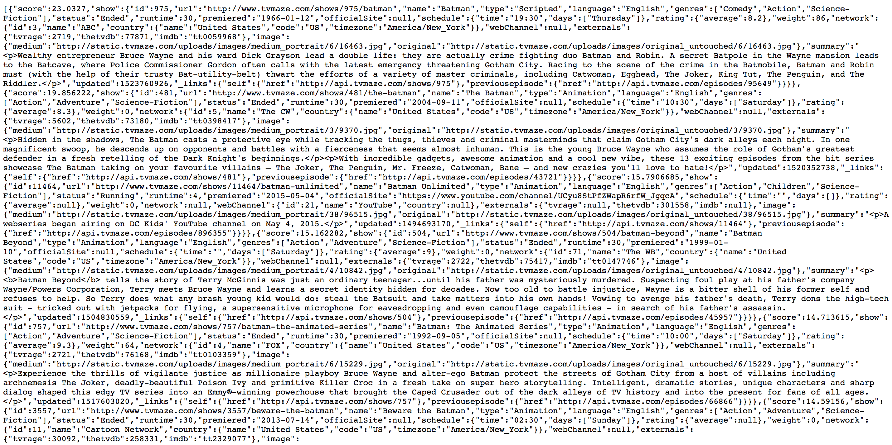
As you can see we can get JSON back from a server but it might be difficult to read this way
Open the following url: https://codebeautify.org/jsonviewer
Click the load url button and enter the https://api.tvmaze.com/search/shows?q=batman url
This site will help us see the response that we get from the server on the left side
We can see the JSON object representation in a way that is more readable
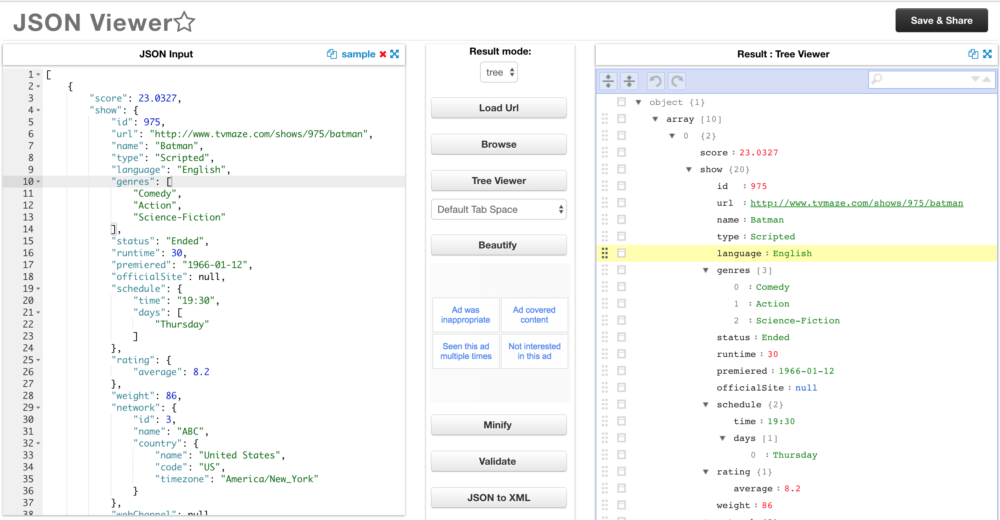
Now that we know what we want to retrieve from the API call we can learn how to get it using JavaScript
The Fetch API provides an interface for fetching resources (including across the network)
It will seem familiar to anyone who has used XMLHttpRequest, but the new API provides a more powerful and flexible feature set
Fetch provides a generic definition of Request and Response objects
The fetch method takes one mandatory argument, the path to the resource you want to fetch
Example:
const apiURL = "https://api.tvmaze.com/search/shows?q=batman";fetch(apiURL);In this example we are using TV Maze public api to retrieve some batman tv data
The
fetchmethod returns aPromisethat resolves to the Response to that request, whether it is successful or notAs the response it's a promise we can use the
thenmethodThe
thenmethod accepts a callback function as parameterExample:
const apiURL = "https://api.tvmaze.com/search/shows?q=batman";fetch(apiURL).then(function(response) {console.log(response); // we get a Response object back with the TV data});The Response object looks like this 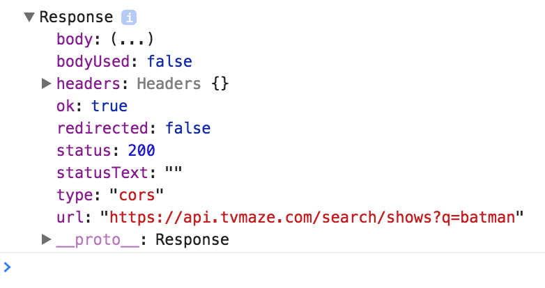
The Response object has a
jsonmethod that returns a promise that resolves with the result of parsing the body text as JSONExample:
const apiURL = "https://api.tvmaze.com/search/shows?q=batman";fetch(apiURL).then(function(response) {return response.json();});Promises can be chained using the
thenmethod as we return valuesExample:
const apiURL = "https://api.tvmaze.com/search/shows?q=batman";fetch(apiURL).then(function(response) {return response.json();}).then(function(data) {console.log(data);});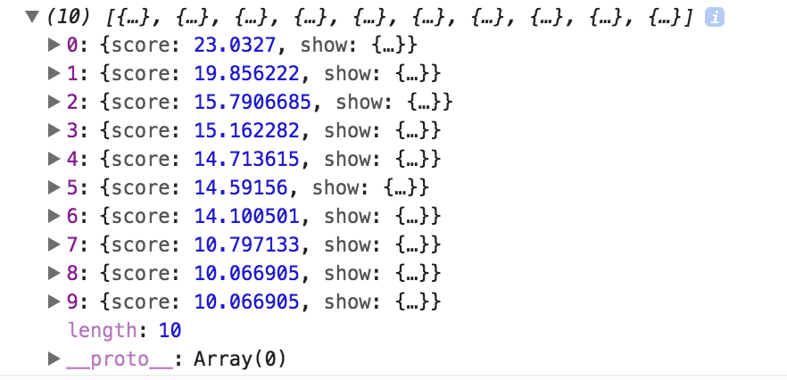
Each episode JSON has the following structure:
{"score": 23.0327,"show": {"id": 975,"url": "http://www.tvmaze.com/shows/975/batman","name": "Batman","type": "Scripted","language": "English","genres": ["Comedy", "Action", "Science-Fiction"],"status": "Ended","runtime": 30,"premiered": "1966-01-12","officialSite": null,"schedule": {"time": "19:30","days": ["Thursday"]},"rating": {"average": 8.2},"weight": 86,"network": {"id": 3,"name": "ABC","country": {"name": "United States","code": "US","timezone": "America/New_York"}},"webChannel": null,"externals": {"tvrage": 2719,"thetvdb": 77871,"imdb": "tt0059968"},"image": {"medium": "http://static.tvmaze.com/uploads/images/medium_portrait/6/16463.jpg","original": "http://static.tvmaze.com/uploads/images/original_untouched/6/16463.jpg"},"summary": "<p>Wealthy entrepreneur Bruce Wayne and his ward Dick Grayson lead a double life: they are actually crime fighting duo Batman and Robin. A secret Batpole in the Wayne mansion leads to the Batcave, where Police Commissioner Gordon often calls with the latest emergency threatening Gotham City. Racing to the scene of the crime in the Batmobile, Batman and Robin must (with the help of their trusty Bat-utility-belt) thwart the efforts of a variety of master criminals, including Catwoman, Egghead, The Joker, King Tut, The Penguin, and The Riddler.</p>","updated": 1523760926,"_links": {"self": {"href": "http://api.tvmaze.com/shows/975"},"previousepisode": {"href": "http://api.tvmaze.com/episodes/95649"}}}}Now that we have the data and know the JSON structure we can use it:
Example:
const apiURL = "https://api.tvmaze.com/search/shows?q=batman";fetch(apiURL).then(function(response) {return response.json();}).then(function(data) {const show = data[0];console.log(show.show.name); // Batmanconsole.log(show.show.premiered); // 1966-01-12console.log(show.show.image.original); // http://static.tvmaze.com/uploads/images/original_untouched/6/16463.jpg});Now we can use everything that we learned on this fetch example
Practice
Congrats!!!
Browser will fight to parse and interpret you JavaScript code
You Rock! 🤘🏻

Now you know JavaScript Browser side, we no longer need a droid! Thanks C-3PO 🤖
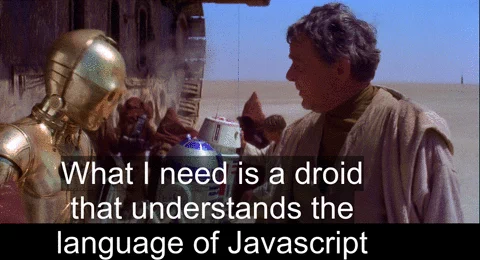